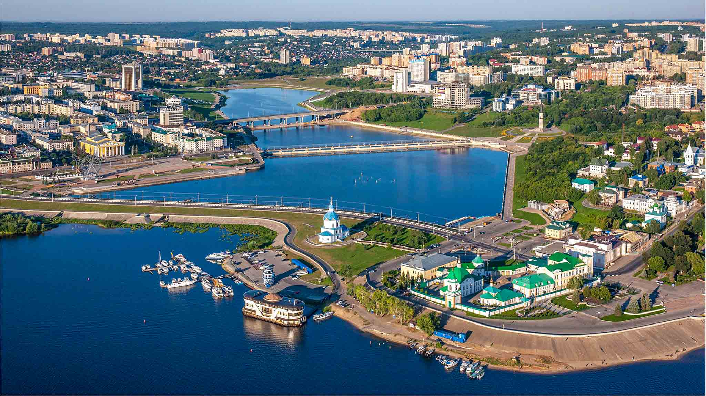
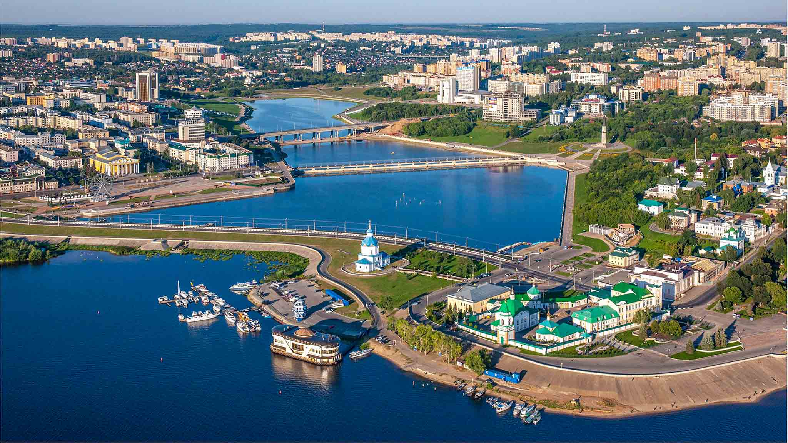

Чебоксары - столица Чувашии
Путеводитель по городу Чебоксары - проведет вас по всем значимым достопримечательностям
История возникновени
На большой карте венецианцев Франциска и Доминика Пицигани 1367 года и на третьей карте атласа Каталинского 1375 года на месте Чебоксар нарисовано изображение города без указания названия. На карте 1459 года, составленной Фра-Мауро для португальского короля Альфонса V на основе более ранних карт, на месте Чебоксар размещён город Веда-Суар (чув. Вӑта Сăвар. рус. Средний Сувар)
Застройка города
Первый этап охватывает период до 1555 года. Древнее поселение было расположено на низине в устье Чебоксарки, по обоим её берегам. Памятников архитектуры той эпохи не сохранилось. О постройках известно лишь по археологическим находкам. Дома были деревянные. Найденные археологами плоские кирпичи употреблялись, скорее всего, только в строительстве подпольных и внутренних печей. Основание русскими властями деревянного кремля в Чебоксарах положило начало второму этапу застройки города, продолжавшемуся до середины XVII века. Это также этап деревянного зодчества. 23—24 июля 1555 года архиепископ казанский и свияжский Гурий по пути в Казань остановился в Чебоксарах и по поручению Ивана IV освятил место и окропил границы будущего кремля, а на месте Введенского собора была установлена полотняная церковь.
История возникновения
Город Чебоксары расположен на Приволжской возвышенности на правом берегу Чебоксарского водохранилища реки Волги. Общая протяжённость границ города составляет 83,3 км, из них по суходольной части — 67,0 км, по набережной Волги — 16,3 км. Площадь города, согласно Генеральному плану, составляет 251 км²[2].

.jpg) 

 copy.jpg)
.jpg)